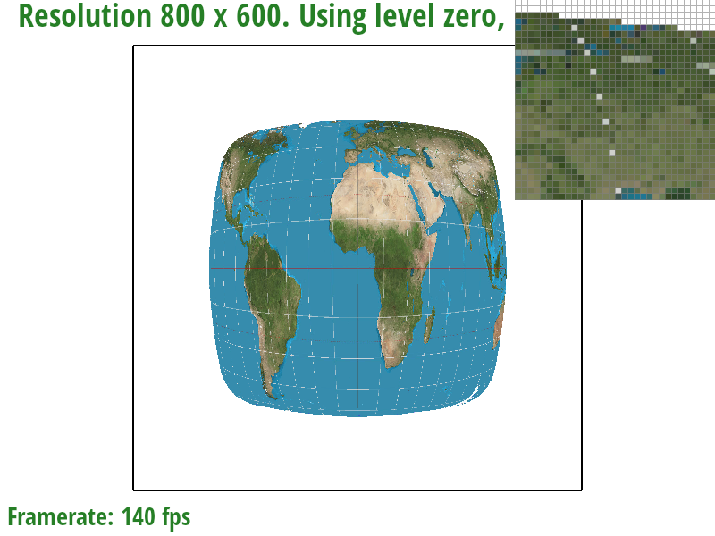
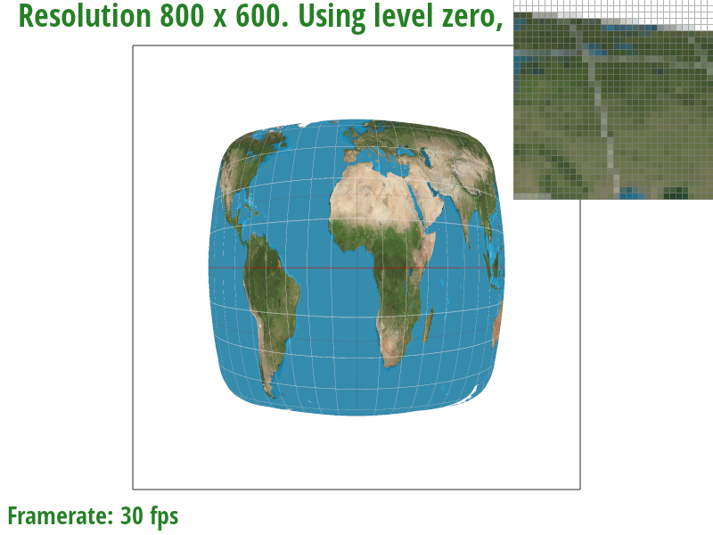
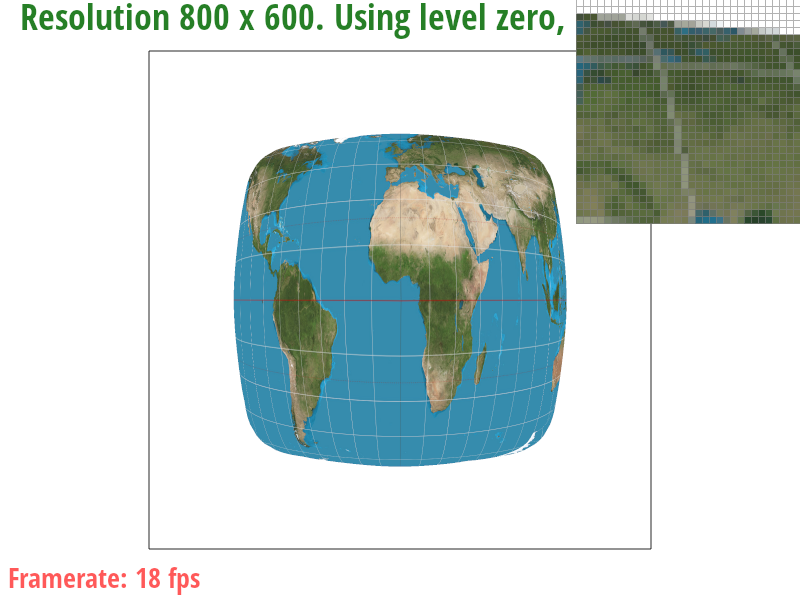
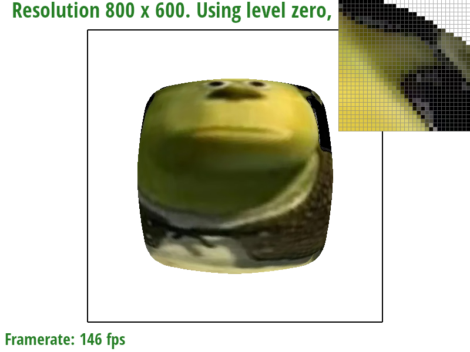
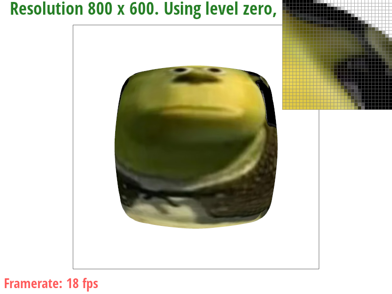
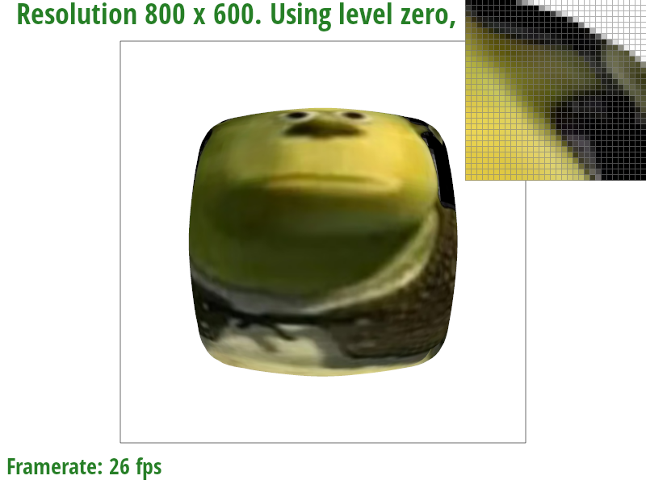
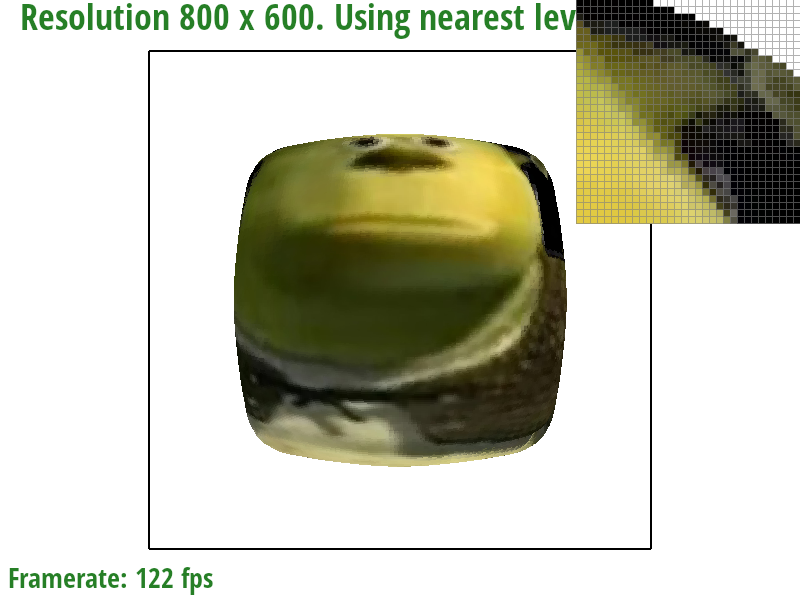
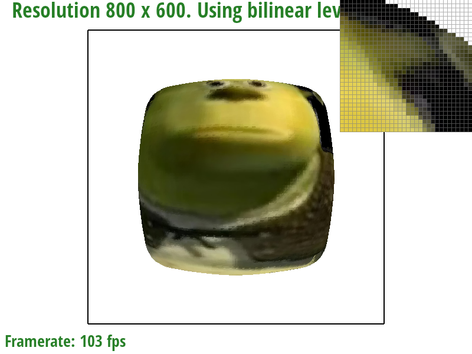
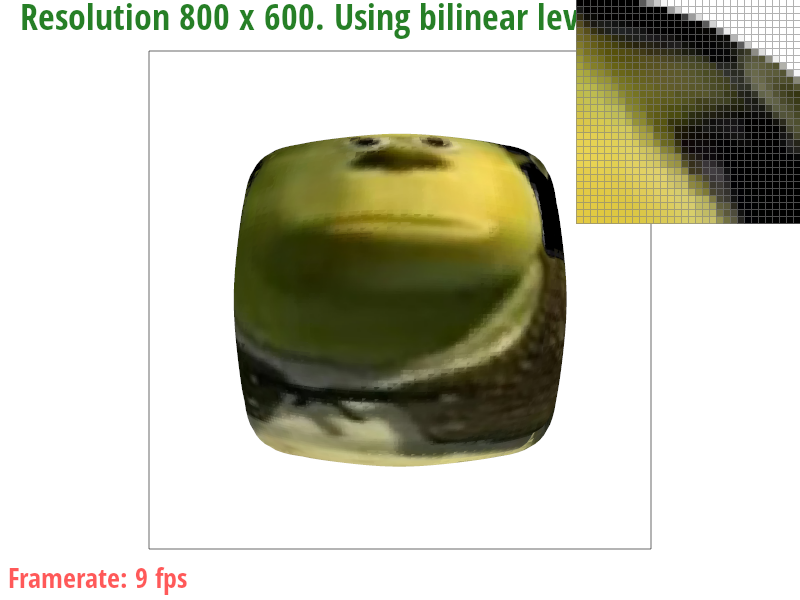

I implemented rasterization and applied texture with mipmap. It was very slow on software, and I am curious about the complexity of the hardware circuit in my GPU to handle all of these computations.
First step of my rasterization process is to calculate the bounding box by calculating the min and max of each x and y coordinates of three vertices. Then, for each point I performed three cross product checks to see if the dot lies inside the triangle or on the outside. It is no worse than the algorithm that checks each sample within the bounding box because this is exactly what I am doing.
Supersampling is done by using the same process as the normal rasterization algorithm, but using closer steps instead. instead of stepping 1 pixel to the left (or down), we step 1/sqrt(n) pixel. The result is stored in a normal 2d array but one pixel now corresponds to n rectangles instead of 1. The values are then averaged together at the framebuffer resolution step.
left: 1x middle: 4x right: 16x
robot torn apart
Barycentric coordinates is a way to express a point inside a triangle as a linear combination of the vectors that point to the vertices. We can use this to interpolate various elements inside the triangle such as color or uv coordinate.
Pixel sampling is a way to estimate a pixel value in a continuous coordinate space when we only have data at discrete coordinates. Nearest sampling simply takes the value of the nearest discrete coordinate, while biliear sampling performs weighted average of the nearby pixels based on the proximity to those points.
|

|

|
|
|

|
The difference is more noticable in 1x case, and there is virtually no difference in 16x case.
There will be a large difference when there is a large change of texture coordinate between pixels
because it causes aliasing.
Bilinear sampling acts like a low pass filter by averaging and reduces aliasing effect.
level sampling works by having a "mipmap" which is a preprocessed downscaled version
of the original texture and sampling from different levels of texture.
This works because we can preapply low pass filter when we downsample, which reduces
the cost as we don't have to average pixels while sampling.
I calculated which level to use by approximating the "footprint" of the pixel in the
texture by calculating the uv coordinates of the pixel to the right and above, and
using the maximum length of those two. Then I applied log2 convert pixels to mipmap levels
(as the size halves as you go up one level).
Supersampling yields the most accurate result but it is very costly in terms of computing.
Pixel sampling is the cheapest, but it is limited to 1 pixel wide box filter.
Level sampling uses more memory, but it yields better result than pixel sampling as
we can apply wider box filter and reduce aliasing.
|

|

|
|
|

|
|

|
|
|

|

|